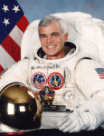

Houston, Texas 77058.
|
National Aeronautics and Space Administration.
Lyndon B. Johnson Space Center Houston, Texas 77058. |
 |
Biographical Data |
||
Michael Richard "Rich" Clifford (Lieutenant Colonel, USA)
NASA Astronaut
PERSONAL DATA Born October 13, 1952 in San Bernadino, California, but considers Ogden, Utah, to be his hometown. Married to the former Nancy Elizabeth Brunson of Darlington, South Carolina. They have two sons. He enjoys flying, golf, tennis, water and snow skiing, baseball, and coaching youth sports. His parents, Gordon and Lenore Clifford, reside in Ogden. Her parents, R. Ben and Mary Lee Brunson, reside in Darlington.
EDUCATION Graduated from Ben Lomond High School, Ogden, Utah in 1970; received a bachelor of science degree from the United States Military Academy, West Point, New York, in 1974, and a master of science degree in aerospace engineering from the Georgia Institute of Technology in 1982.
MARITAL STATUS Married to the former Nancy Elizabeth Brunson of Darlington, South Carolina. Her parents, R. Ben and Mary Lee Brunson, reside in Darlington.
CHILDREN Richard Benjamin, March 14, 1980; Brandon Brunson, May 19, 1983.
RECREATIONAL INTERESTS Enjoys flying, golf, tennis, water and snow skiing, baseball, and coaching youth sports.
ORGANIZATIONS Member of the Association of Space Explorers, American Helicopter Society, Army Aviation Association, and the Aircraft Owners and Pilots Association.
SPECIAL HONORS Recipient of the Defense Superior Service Medal, the Legion of Merit, the Defense Meritorious Service Medal, the National Intelligence Medal of Achievement, NASA Space Flight Medal and the Army Commendation Medal.
EXPERIENCE Clifford graduated from West Point in June 1974 and was commissioned as a Second Lieutenant in the U.S. Army. He served a tour with the 10th Cavalry in Fort Carson, Colorado. He then entered the U.S. Army Aviation School in 1976. He was the top graduate of his flight class and was designated an Army Aviator in October 1976. He was subsequently assigned for three years as a service platoon commander with the Attack Troop, 2nd Armored Cavalry Regiment in Nuremberg, West Germany. After completing a master of science degree at Georgia Tech in 1982, he was assigned to the Department of Mechanics at West Point as an instructor and assistant professor. In December 1986 he graduated from the U.S. Naval Test Pilot School and was designated an Experimental Test Pilot. A Master Army Aviator, he has logged 3,400 flying hours in a wide variety of fixed and rotary winged aircraft. In December 1995 Lieutenant Colonel Clifford retired from the United States Army.
NASA EXPERIENCE As a military officer, Clifford was assigned to the Johnson Space Center in July of 1987. As a Space Shuttle Vehicle Integration engineer, his duties involved engineering liaison for launch and landing operations of the Space Shuttle Program. He was involved in design certification and integration of the Shuttle Crew Escape System, and was an executive board member of the Solid Rocket Booster Postflight Assessment Team. Selected as an astronaut by NASA in July 1990, Clifford has served in a variety of technical assignments. From April to August 1991, Clifford was assigned to the Astronaut Office Mission Development Branch where he participated in the design, development, and evaluation of Space Shuttle payloads and crew equipment having extravehicular activity (EVA) interfaces. From May 1994 to September 1995 he served as lead for space station vehicle/assembly issues. A veteran of three space flights, Clifford flew as a mission specialist on STS-53 in 1992, STS-59 in 1994, and STS-76 in 1996. He has logged 665 hours in space, including a 6-hour spacewalk.
Clifford first flew on the crew of STS-53 which launched from the Kennedy Space Center, Florida, on December 2, 1992, aboard the Space Shuttle Discovery. The mission carried a Department of Defense payload and a variety of secondary payloads. Clifford was responsible for operating a number of experiments which included the Fluid Acquisition and Resupply Experiment (FARE) and the Battlefield Laser Acquisition Sensor Test (BLAST). FARE was a microgravity fluid transfer experiment designed to evaluate improved spacecraft propellant tanks. BLAST was a hand-held laser energy detector designed to detect and interpret a data message in a low-power Earth-based laser. After completing 115 orbits of the Earth, STS-53 landed at Edwards Air Force Base, California, on December 9, 1992.
He next served aboard Endeavour on the STS-59 Space Radar Laboratory (SRL) mission which launched April 9, 1994. SRL consisted of three large radars, SIR-C/X-SAR (Shuttle Imaging Radar C/X-Band Synthetic Aperture Radar), and a carbon monoxide sensor that were used to enhance studies of the Earth's surface and atmosphere. The imaging radars operated in three frequencies and four polarizations. This multispectral capability of the radars provided information about the Earth's surface over a wide range of scales not discernible with previous single-frequency experiments. The carbon monoxide sensor (MAPS) used gas filter radiometry to measure the global distribution of CO in the troposphere. Real time crew observations of surface phenomena and climatic conditions augmented with over 14,000 photographs aided investigators in interpretation and calibration of the data. The mission concluded on April 20, 1994, with a landing at Edwards Air Force Base after orbiting the Earth 183 times in 269 hours.
Clifford next served on STS-76, the third docking mission to the Russian space station Mir, which launched on March 22, 1996 with a crew of six aboard Atlantis. Following rendezvous and docking with Mir, transfer of a NASA Astronaut to Mir for a five month stay was accomplished to begin a continuous presence of U.S. astronauts aboard Mir for the next two year period. The crew also transferred 4800 pounds of science and mission hardware, food, water and air to Mir and returned over 1100 pounds of U.S. and ESA science and Russian hardware. Clifford performed a 6-hour spacewalk, the first while docked to an orbiting space station, to mount experiment packages on the Mir docking module to detect and assess debris and contamination in a space station environment. The experiments will be retrieved by a future shuttle mission. This mission was also the first flight of Kidsat, an electronic camera controlled by classroom students via a Ku-bank link between JSC Mission Control and the Shuttle, which uses digitized photography from the Shuttle for science and education. Following 145 orbits of the Earth, Atlantis landed with a crew of five at Edwards Air Force Base in California on March 31, 1996.
Rich Clifford left NASA in January 1997 to accept the position of Space Station Flight Operations Manager for Boeing Defense and Space Group.
JANUARY 1997
{kind=link}